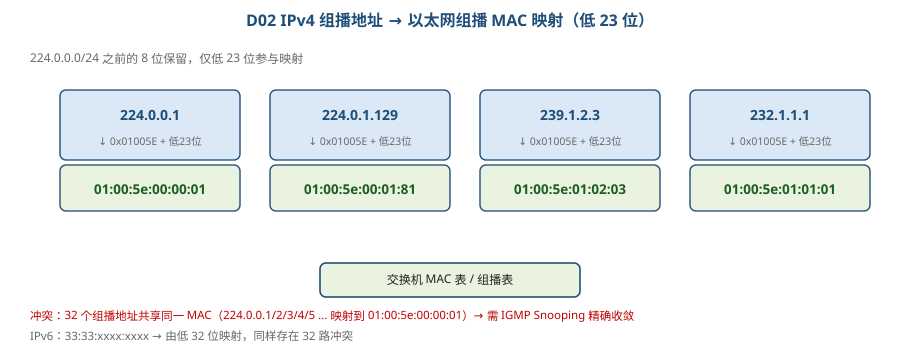
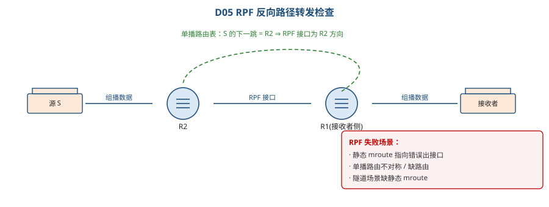

ch01 组播基础模型、地址体系与分发树模型
来源：Williamson Ch1–2（原理与收益）、Aweya Ch1.1–1.9（模型/地址/树/RPF 权威定义）、Aweya Ch1.8（管理域边界） 配图：D01 地址空间｜D02 MAC 映射｜D05 RPF｜D06 分发树


学习目标
读完本章你应能：
- 说清单播/广播/组播/任播四种通信模型的差异与选型依据；
- 准确背诵 IPv4 组播地址的 6 个功能分区及其边界行为；
- 解释"为什么 32 个组播 IP 会映射到同一个 MAC"以及它对二层设计的含义；
- 画出 ASM / SSM / BIDIR-PIM 三种投递模型的差异；
- 区分源树 (S,G) 与共享树 (*,G)，说明 RPT-bit 的作用；
- 判断一条组播流是"跨域可控"还是"需要额外边界机制"。
1. 四种通信模型
| 模型 | 目的地址 | 接收者数量 | 典型场景 |
|---|---|---|---|
| 单播 Unicast | 单一主机地址 | 1 | 常规业务 |
| 广播 Broadcast | 广播地址 | 同子网全部 | DHCP Discover、ARP |
| 组播 Multicast | 组地址 (Class D / FF00::/8) | 任意多（跨网） | 行情推送、视频分发、遥测、PTP |
| 任播 Anycast | 某服务地址在多站点重复宣告 | 1（就近） | DNS 服务器集群、CDN 入口 |
组播的经济性来自"一份数据、树上复制"：源发 1 份，路径上每个分支点才复制。若用单播给 N 个接收者，源侧需要 N 份流量、占用 N 倍上行带宽、N 倍服务器资源。
组播的代价（Williamson Ch1 "The Cons of IP Multicast"）：
- 不可靠交付：跑在 UDP 之上，无重传、无流控、无拥塞避免（Best Effort）；
- 包重复：网络复制/重传机制导致接收端需容忍重复；
- 网络拥塞：一旦某个分支链路带宽不足即丢包，且组播无拥塞反馈；
- 复杂度上升：源发现、成员管理、RPF、树维护、跨域互联都需要额外协议与配置。
生产含义：组播适合"一份大数据 → 多接收者，且能容忍少量丢包"的场景（行情、遥测、视频）。对"必须 100% 可靠"的场景（账务、交易指令）不要用裸组播。
2. IPv4 组播地址体系（必须背下来）
IPv4 组播地址 = Class D，首 4 bit 固定 1110，范围 224.0.0.0 – 239.255.255.255（即 224.0.0.0/4）。
| 区间 | 名称 | 关键行为 |
|---|---|---|
224.0.0.0/24 |
链路本地控制 | TTL 固定 1，绝不跨路由器。IGMP(224.0.0.1/22)、PIM Hello(224.0.0.13)、OSPFIGP(224.0.0.5/6)、VRRP(224.0.0.18) |
224.0.1.0 – 224.0.1.255 |
全局可达的控制协议 | 需要跨网时 TTL 要显式设大（如 ip pim ttl 255），Aweya 特别提醒这一点 |
225.0.0.0 – 238.255.255.255 |
常规 ASM 业务 | 最常用的业务组段 |
232.0.0.0/8 |
SSM（源特定组播） | 只能配 IGMPv3 / SSM-Mapping 使用，与 ASM 不互通 |
233.0.0.0/8 |
GLOP | 按 AS 号分配：233.AS号.序号.序号，运营商/大客户全球组播专用 |
239.0.0.0/8 |
管理域私有（Admin Scoped） | 跨 BGR（边界路由器）时自动收敛，企业私有组播首选 |
240.0.0.0/4 |
保留（Class E） | 不可用 |
记忆口诀：0-1 本地，2 源特定，3 GLOP，9 私有。
2.1 管理域边界（Admin Scope）
239.0.0.0/8 的意义不止是"私有"：在 RFC 2365 的 Administratively Scoped Boundary 机制下，边界路由器（BGR）会自动收敛掉（prune）穿越该边界的 239/8 组播流，无需额外配置。
对设计的直接影响：
- 单一 PIM 域内使用 239/8 → 天然不外泄，安全省心；
- 跨域使用时需要 BGR 显式存在（配置
ip multicast boundary同样作用）； - 组播地址规划时，若希望某些业务"天然不出网"，优先选 239/8 而非加 ACL。
! 在边界路由器上显式定义边界（等价于默认的 239/8 行为，可叠加更严格的列表）
ip multicast boundary 239.0.0.0/8
2.2 TTL 作用域与阈值
组播默认 TTL = 1（多数主机默认），因此默认只能跨 1 跳。这是组播最常见的"业务不通"原因之一。
interface Gi0/1
ip multicast ttl 255 ! 允许组播穿越该接口（ISP/骨干常用）
ip multicast threshold 48 ! 限制组播在网络中的最大跳数
ip multicast ttl：改写出接口的组播 TTL（组播包的 TTL 与单播不同，是逐跳重写而非递减）；ip multicast threshold：入方向按 TTL 过滤，低于阈值直接丢弃。
生产经验：源主机侧设
ip multicast ttl 255，中间设备保持默认，靠 threshold 控制域边界，而不是在每跳改 TTL。
3. 二层映射：01:00:5e 与 32 路冲突

映射规则（RFC 1112 / Aweya 1.4.3）：
MAC = 01:00:5e : XXXXXXXX : XXXXXXXX
└── 低 23 位 = 组播 IP 的低 23 位
即只取 IP 低 23 位，高 9 位（含 1110 与 224~239 的高 3 位）被丢弃。
后果：32 个连续的组播地址映射到同一个 MAC。
| IP | MAC |
|---|---|
| 224.0.0.1 / 224.0.0.33 / 224.0.0.65 … | 01:00:5e:00:00:01 |
| 224.0.1.129 | 01:00:5e:00:01:81 |
| 239.1.2.3 | 01:00:5e:01:02:03 |
| 232.1.1.1 | 01:00:5e:01:01:01 |
工程含义：
- 交换机必须做 IGMP Snooping（或 CGMP/PIM Snooping），否则组播像广播一样泛洪，浪费带宽；
- 同一交换机上同一 MAC 的多个组会"一起"被泛洪——这是交换机侧无法区分的，只能靠三层组播表精细化；
- IPv6：前缀固定
33:33，由低 32 位映射，同样存在 32 路冲突（33:33:0:0/96 与 33:33:ffff:ffff/96 特殊处理）。
注意：MAC 映射只影响 L2 域内的转发决策。跨路由时靠 IP 组地址 + mroute 精确转发，不存在冲突问题。
4. 三种投递模型（ASM / SSM / BIDIR）
| 维度 | ASM (Any-Source Multicast) | SSM (Source-Specific Multicast) | BIDIR-PIM |
|---|---|---|---|
| 接收者订阅粒度 | (*,G) 组 |
(G,S) 源+组 |
(*,G) 组 |
| 是否需要 RP | 需要 | 不需要 | 需要 RP（但只做双向共享树） |
| 是否有共享树 | 有 | 无（只有 SPT） | 有（双向） |
| 是否有源树状态 | 有 (S,G) |
有 (S,G) |
无（只有 (*,G)） |
| 是否有 Register | 有 | 无 | 无 |
| 源发现方式 | RP 接收源注册 | 接收者/应用层直接指定源 | RPA 直接收源 |
| 防伪源能力 | 弱（任何人都能向组发） | 强（只接受指定源） | 中（受 DF/作用域约束） |
| 跨域支持 | MSDP+MBGP | 天然支持（无需 MSDP） | 需 Embedded-RP/作用域规划 |
| 典型场景 | 通用组播、IPTV（ASM 模式） | 视频分发、直播、企业内部源特定分发 | 行情（大量源、少量接收者） |
SSM 的四个硬优势（Aweya 5.18.6 归纳，与你的自有笔记一致）：无 RP、无 MSDP、无共享树、源过滤安全。
SSM 的代价：接收端必须知道"源地址"——由 IGMPv3 (G,S) 报文携带，或由 IGMPv2 + SSM-Mapping（静态 ip igmp ssm-mapping 或动态 DNS 解析）补齐。
BIDIR-PIM 的定位：只在"源多、接收者少"且源与接收者之间的树形结构对称时才划算（如交易所行情：成百上千个源网关 → 少量行情接收终端）。源少接收者多的场景用 BIDIR 是浪费。
5. 分发树模型

5.1 源树 (Source Tree, SPT)
- 状态标识：
(S, G)，即"源 S 到组 G"的唯一路径； - 特点：路径最短、无瓶颈、带宽最优；但需要为每个源单独建状态，规模大时状态爆炸（N 个源 × M 个组）。
5.2 共享树 (Shared Tree, RPT)
- 状态标识：
(*, G)； - 特点：所有源共用一棵以 RP 为根的树，状态数与源数无关；
- 代价：RP 是瓶颈与单点，且从 RP 到源有一段"额外绕路"。
5.3 PIM-SM 的经典三步
- 源侧 DR 把组播包封装成 Register 发给 RP → RP 建立
(S,G)； - 接收侧 Last-hop 发
(*,G) Join→ 沿树向上到 RP，建共享树； - 当接收侧判定 SPT 更优（默认收到
(S,G) Join即可，或 RPT 上行带宽超阈值）→ 发(S,G) Join建源树，并向 RP 发(S,G,rpt) Prune剪掉共享树上这一段，同时在 RPT 上打 SPT-bit。
SPT-bit 的作用：告诉上游"这条共享树支路上有接收者已经走了 SPT，不要再往这里送该源的流量"。这是 PIM-SM 中最容易被忽略、却直接决定带宽占用的状态位。
6. RPF：组播的"方向盘"

RPF（Reverse Path Forwarding）：收到组播包时，路由器查单播路由表，看"到源 S 的下一跳"是哪个接口；只有从该接口进来的组播包才转发，否则丢弃。
三个作用：
- 防环路：组播树本质是"以源为根的生成树"，RPF 保证包只沿树向下走，不绕回来；
- 防伪源：伪造的源地址没有对应的 RPF 接口，包进不来；
- 与单播路由解耦：PIM 不维护自己的路由表，直接复用 IGP 结果 → 组播"搭便车"。
RPF 的三种实现（详见 ch03）：
| 模式 | 行为 |
|---|---|
| 严格 RPF | 只接受来自 RPF 接口的包 |
| 静态 mroute | 手工指定 RPF 接口与静态组播路由，可绕过 RPF，但极易造成环路 |
无 RPF（ip pim 关闭 multicast routing） |
设备不做 RPF 检查直接泛洪（仅限实验/老设备） |
你的自有笔记已强调："Static MC routes – can be used, but very careful not to create PIM routing loops"。这是运维红线：静态 mroute 只在"隧道/非 PIM 网络"这类必须的场景使用，并必须写明设计文档。
7. 组播应用场景速览
| 场景 | 组播价值 | 关键要求 |
|---|---|---|
| 金融行情（Level 2/3） | 一份行情源 → 成百上千接收终端，节省出口带宽 | BIDIR/ASM，源隔离，顺序性（序列号 + 丢包重传补丁） |
| IPTV / 直播 | 频道数量多、并发接收者多 | 组播 + IGMPv3，运营商组播域 |
| 医疗（设备遥测、影像） | 影像/监护数据一对多 | 与自有笔记的"临床网络组播"一致；VLAN 隔离 + 白名单 |
| 工业/电力（PMU 同步） | 同步相量测量数据广播 | PTP/组播混合，低时延抖动要求 |
| 软件/镜像分发 | 大文件一次推多台 | 大带宽、可容忍丢包 |
| 视频会议 | 多方媒体流 | MCU 中心化，组播可减服务器压力 |
8. 生产案例（7 例）
案例 1-1：行情推送只有部分终端收到
现象：交易大厅 200 台终端订阅 239.10.1.1，其中约 30 台收不到行情，刷新时间为空。
定位：
show ip igmp groups 239.10.1.1 ! 发现 3 个端口下无成员
show ip igmp snooping groups vlan 10 ! 二层侧只有 3 个端口
根因：接入交换机未开 ip igmp snooping，组播泛洪到全部端口但交换机 MAC 表被其他组播冲刷（因 32 路 MAC 冲突，多个组共享 01:00:5e:00:0a:01），终端上行 ARP/单播表项把该 MAC 老化掉。
处置：接入层开 ip igmp snooping vlan 10，并对该 VLAN 配置 ip igmp snooping querier（或由汇聚层指定 querier）。
复盘：组播地址规划时避免同 MAC 冲突密集的连续段；组播业务 VLAN 建议与普通业务 VLAN 隔离。
案例 1-2：组播业务"只能跑一跳"
现象：源与接收者同机房不同 VLAN 段，跨交换机后组播中断；抓包显示源发出的组播 TTL=1。
定位：源主机抓包确认 TTL；show ip mroute 239.x.x.x 在跨接设备上无条目。
根因：主机默认组播 TTL=1（Windows 默认 TTL=1，多数 Linux 默认 1）。
处置：源侧网关出接口配 ip multicast ttl 255；或源应用显式设置组播 TTL>1。
复盘：所有组播源上线前，必须检查"源到接收者的跳数 ≤ TTL"。
案例 1-3：SSM 组地址被误配进 ASM 环境
现象：业务组 232.1.1.1 无流量，且 show ip igmp groups 无记录。
定位：show ip igmp groups 232.1.1.1 空；主机侧显示 IGMPv2（只报 (*,G)）；show ip mroute 232.1.1.1 空。
根因：主机跑 IGMPv2，无法表达 (G,S)；且路由侧未配 ip pim ssm range 232.0.0.0/8，SSM 段被当普通组处理。
处置：终端升级到 IGMPv3；或启用 ip igmp ssm-mapping static 232.1.1.1 10.1.1.10。
复盘：SSM 三件套必须同时到位：IGMPv3（或 SSM-Mapping）+ ip pim ssm range + 主机正确订阅 (G,S)。
案例 1-4：跨域组播在边界被"莫名"剪断
现象：两个园区通过运营商互联，239/8 组播在边界设备上通一会儿就断。
定位：show ip mroute 在边界路由器上看到组播被 prune；show ip mroute 239.5.5.5 有 prune 标志。
根因：边界路由器存在 Admin Scope 边界（默认行为），239/8 组播不跨 Admin Scope 边界。
处置：若业务确需跨域，改用 232/8（SSM）或运营商分配的其他段；或改用 MSDP + MBGP 在域间显式转发并配合不受边界约束的组段。
复盘：地址段选择即安全边界设计；跨域组播优先用 SSM。
案例 1-5：组播流在核心交换机被"限速"
现象：4K 视频组播流在接入层正常，到汇聚层后卡顿。
定位：show interfaces counters 看到 output drops；show policy-map 发现默认 ip multicast rate-limit 生效。
根因：设备默认对组播做限速（多在 1000–2000 pps 量级），而 4K 视频小包率高。
处置：按接口关闭/调高组播限速；或在 QoS 中给组播流单独 class 保障。
复盘：任何"小包高包率"的组播业务（视频、遥测）上线前必须核对 pps 限速策略。
案例 1-6：单播与组播同时存在，组播 RPF 失败
现象：组播业务不通，但单播全通；show ip mroute 中对应 (S,G) 缺失。
定位：show ip rpf <source-ip> 显示 RPF interface 为 Null 或与实际入接口不符；debug ip mpacket 报 RPF failed。
根因：源服务器有 两个出口（主用上联 + 备份上联），而组播只从主上联进来；单播业务做了本地策略路由但组播按 FIB 查表。
处置：源侧统一出口（服务器侧 bonding/单出口），或在路由侧对组播源地址做策略路由使其 RPF 一致。
复盘：多出口主备是组播第一杀手，务必在设计评审时确认"源是否单出口"。
案例 1-7：GLOP 段地址被错误分配
现象：某业务使用 233.5.1.1（AS5 的 GLOP 段），但在内网运行正常，跨到运营商就不通。
定位：运营商侧反馈 233.x 段未授权。
根因：GLOP 段由 AS 号分配，AS5 之外不能使用；且运营商的 GLOP 段由其自行管理。
处置：内网业务改用 239/8；对外业务向运营商申请对应的全球组播地址段。
复盘：组播地址规划要区分"内网私有（239/8）""SSM（232/8）""运营商全球（GLOP）"三类，来源与授权不同。
9. 自测清单
- 为什么
224.0.0.13（PIM Hello）不会被路由到组播用户，而224.0.1.39（AutoRP）需要特别配置？ - 32 路 MAC 冲突对二层组播设计造成的三个具体影响是什么？
- 为什么 SSM 能"天然跨域"，而 ASM 必须依赖 MSDP？
(S,G,rpt)状态里的 rpt 标志含义是什么？它和 SPT-bit 有什么区别？- 什么场景下用 BIDIR-PIM 是浪费？判断依据是什么？
ip multicast ttl与ip multicast threshold的作用面分别是什么？
10. 延伸阅读
- Aweya Ch1.1–1.9（P.22–P.76）：四种通信模型、组播地址、二层映射、分发树、RPF、TTL/Threshold、Admin Scope、PIM Snooping、组播路由体系架构（MRPE/MRTM/MGMD/MSDP 组件模型）
- Williamson Ch1–2（P.4–P.55）：组播的收益/代价、组播应用史（MBone）、地址与 MAC 映射
- 延伸：
RFC 2365（Admin Scoped）、RFC 1112（IP 多播主机行为）、RFC 4607（Embedded-RP）